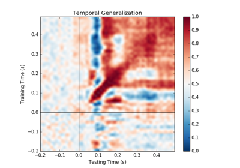

mne.decoding.SlidingEstimator¶
-
class
mne.decoding.SlidingEstimator(base_estimator, scoring=None, n_jobs=1, verbose=None)[source]¶ Search Light.
Fit, predict and score a series of models to each subset of the dataset along the last dimension. Each entry in the last dimension is referred to as a task.
- Parameters
- base_estimatorobject
The base estimator to iteratively fit on a subset of the dataset.
- scoring
callable(),str, defaultNone Score function (or loss function) with signature
score_func(y, y_pred, **kwargs). Note that the predict_method is automatically identified if scoring is a string (e.g. scoring=”roc_auc” calls predict_proba) but is not automatically set if scoring is a callable (e.g. scoring=sklearn.metrics.roc_auc_score).- n_jobs
int The number of jobs to run in parallel (default 1). Requires the joblib package. The number of jobs to run in parallel for both
fitandpredict. If -1, then the number of jobs is set to the number of cores.- verbosebool,
str,int, orNone If not None, override default verbose level (see
mne.verbose()and Logging documentation for more).
Attributes
estimators_
(array-like, shape (n_tasks,)) List of fitted scikit-learn estimators (one per task).
Methods
__hash__(self, /)Return hash(self).
decision_function(self, X)Estimate distances of each data slice to the hyperplanes.
fit(self, X, y, \*\*fit_params)Fit a series of independent estimators to the dataset.
fit_transform(self, X, y, \*\*fit_params)Fit and transform a series of independent estimators to the dataset.
get_params(self[, deep])Get parameters for this estimator.
predict(self, X)Predict each data slice/task with a series of independent estimators.
predict_proba(self, X)Predict each data slice with a series of independent estimators.
score(self, X, y)Score each estimator on each task.
set_params(self, \*\*params)Set the parameters of this estimator.
transform(self, X)Transform each data slice/task with a series of independent estimators.
-
__hash__(self, /)¶ Return hash(self).
-
decision_function(self, X)[source]¶ Estimate distances of each data slice to the hyperplanes.
- Parameters
- X
array, shape (n_samples, nd_features, n_tasks) The input samples. For each data slice, the corresponding estimator outputs the distance to the hyperplane, e.g.:
[estimators[ii].decision_function(X[..., ii]) for ii in range(n_estimators)]. The feature dimension can be multidimensional e.g. X.shape = (n_samples, n_features_1, n_features_2, n_estimators)
- X
- Returns
- y_pred
array, shape (n_samples, n_estimators, n_classes * (n_classes-1) // 2) Predicted distances for each estimator/data slice.
- y_pred
Notes
This requires base_estimator to have a
decision_functionmethod.
-
fit(self, X, y, **fit_params)[source]¶ Fit a series of independent estimators to the dataset.
- Parameters
- X
array, shape (n_samples, nd_features, n_tasks) The training input samples. For each data slice, a clone estimator is fitted independently. The feature dimension can be multidimensional e.g. X.shape = (n_samples, n_features_1, n_features_2, n_tasks)
- y
array, shape (n_samples,) | (n_samples, n_targets) The target values.
- **fit_params
dictofstr-> object Parameters to pass to the fit method of the estimator.
- X
- Returns
- selfobject
Return self.
Examples using
fit:
-
fit_transform(self, X, y, **fit_params)[source]¶ Fit and transform a series of independent estimators to the dataset.
- Parameters
- X
array, shape (n_samples, nd_features, n_tasks) The training input samples. For each task, a clone estimator is fitted independently. The feature dimension can be multidimensional e.g. X.shape = (n_samples, n_features_1, n_features_2, n_estimators)
- y
array, shape (n_samples,) | (n_samples, n_targets) The target values.
- **fit_params
dictofstr-> object Parameters to pass to the fit method of the estimator.
- X
- Returns
- y_pred
array, shape (n_samples, n_tasks) | (n_samples, n_tasks, n_targets) The predicted values for each estimator.
- y_pred
-
predict(self, X)[source]¶ Predict each data slice/task with a series of independent estimators.
The number of tasks in X should match the number of tasks/estimators given at fit time.
- Parameters
- X
array, shape (n_samples, nd_features, n_tasks) The input samples. For each data slice, the corresponding estimator makes the sample predictions, e.g.:
[estimators[ii].predict(X[..., ii]) for ii in range(n_estimators)]. The feature dimension can be multidimensional e.g. X.shape = (n_samples, n_features_1, n_features_2, n_tasks)
- X
- Returns
- y_pred
array, shape (n_samples, n_estimators) | (n_samples, n_tasks, n_targets) Predicted values for each estimator/data slice.
- y_pred
-
predict_proba(self, X)[source]¶ Predict each data slice with a series of independent estimators.
The number of tasks in X should match the number of tasks/estimators given at fit time.
- Parameters
- X
array, shape (n_samples, nd_features, n_tasks) The input samples. For each data slice, the corresponding estimator makes the sample probabilistic predictions, e.g.:
[estimators[ii].predict_proba(X[..., ii]) for ii in range(n_estimators)]. The feature dimension can be multidimensional e.g. X.shape = (n_samples, n_features_1, n_features_2, n_tasks)
- X
- Returns
- y_pred
array, shape (n_samples, n_tasks, n_classes) Predicted probabilities for each estimator/data slice/task.
- y_pred
-
score(self, X, y)[source]¶ Score each estimator on each task.
The number of tasks in X should match the number of tasks/estimators given at fit time, i.e. we need
X.shape[-1] == len(self.estimators_).- Parameters
- X
array, shape (n_samples, nd_features, n_tasks) The input samples. For each data slice, the corresponding estimator scores the prediction, e.g.:
[estimators[ii].score(X[..., ii], y) for ii in range(n_estimators)]. The feature dimension can be multidimensional e.g. X.shape = (n_samples, n_features_1, n_features_2, n_tasks)- y
array, shape (n_samples,) | (n_samples, n_targets) The target values.
- X
- Returns
- score
array, shape (n_samples, n_estimators) Score for each estimator/task.
- score
-
set_params(self, **params)[source]¶ Set the parameters of this estimator. The method works on simple estimators as well as on nested objects (such as pipelines). The latter have parameters of the form
<component>__<parameter>so that it’s possible to update each component of a nested object. Returns ——- self
-
transform(self, X)[source]¶ Transform each data slice/task with a series of independent estimators.
The number of tasks in X should match the number of tasks/estimators given at fit time.
- Parameters
- X
array, shape (n_samples, nd_features, n_tasks) The input samples. For each data slice/task, the corresponding estimator makes a transformation of the data, e.g.
[estimators[ii].transform(X[..., ii]) for ii in range(n_estimators)]. The feature dimension can be multidimensional e.g. X.shape = (n_samples, n_features_1, n_features_2, n_tasks)
- X
- Returns
- Xt
array, shape (n_samples, n_estimators) The transformed values generated by each estimator.
- Xt